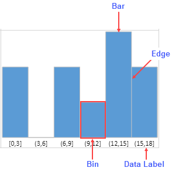
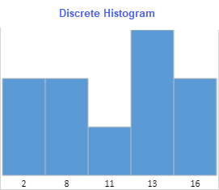
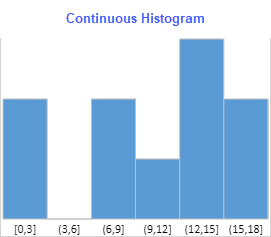

Histograms are used to represent the frequency distribution of a data set. SpreadJS allows you to create histogram sparklines by using the histogram sparkline function.

The above image shows a histogram sparkline and its elements:
(cellRowHeight - labelFontSize - 6px)Otherwise it is determined by:
(cellRowHeight - 6px)
Math.floor(cellRowHeight/3)
The Histogram sparklines can be displayed in a discrete or continuous manner as shown below:
|  |  |
Discrete Histogram represents the data in a discrete manner (without continuous intervals) by taking existing values. For example: 20, 34, 38. The values are painted in ascending order.
Continuous Histogram represents the data by taking a range of continuous values. The intervals for the first bin are left-closed and right-closed, whereas intervals for rest of the bins are left-open and right-closed.
Math.floor(minValue/scale)*scaleWhereas the upper bound is calculated using:
Math.ceil(maxValue/scale)*scale
The type of histogram can be specified by using the continuous option in the HistogramSparkline formula. The histogram sparkline formula has the following options where only 'dataRange' is the required argument:
| Option | Description |
|---|---|
|
dataRange |
Specifies the range of data sources. It supports a range.
It supports calc array and calc reference. |
|
continuous |
If set to true, the sparkline is a continuous histogram.
If set to false, the sparkline is a discrete histogram. The default value is true. |
|
paintLabel |
If set to true, the sparkline paints the data label.
The default value is false. |
|
scale |
Specifies the bin width. This value is useful when histogram type is continuous.
The default value is false. |
|
barWidth |
Specifies the bar width. Default value is 1.
Bar width = auto calc width * barWidth Value range is 0 < value ≤ 1. |
|
barColor |
Specifies the color of the bar.
Default value is '5B9BD5'. Supports CSS color property. |
|
labelFontStyle |
Specifies the font style of the data label font.
The default value is 9pt Calibri. Supports CSS font property. It supports font-style, font-weight, font-size, font-family. |
| labelColor |
Specifies the font color of data label font.
Default is black (#00000). Supports CSS color string. |
| edgeColor |
Specifies the color of the edge.
Default value is silver (#C0C0C0). Supports CSS color property. |
The histogram sparkline formula has the following syntax:
=HISTOGRAMSPARKLINE(dataRange,continuous?,paintLabel?,scale?,barWidth?,barColor?,labelFontStyle?,labelColor,edgeColor?)
Notes
Consider a scenario where an organization has conducted a survey of social media consumption by users on a weekly basis. The histogram sparkline can depict these statistics and analyze the trends about how much time users spent on different social media platforms.
Histogram Sparkline Usage Scenario
| JavaScript |
Copy Code
|
|---|---|
// initializing Spread var spread = new GC.Spread.Sheets.Workbook(document.getElementById('ss'), { sheetCount: 1 }); spread.suspendPaint(); // get the sheets var sheet1 = spread.sheets[0]; // set sheetAreaOffset option sheet1.options.sheetAreaOffset = { left: 1, top: 1 }; // Hide gridlines sheet1.options.gridline = { showVerticalGridline: false, showHorizontalGridline: false }; // Hide row/ col headers sheet1.options.colHeaderVisible = false; sheet1.options.rowHeaderVisible = false; // set column width for (var i = 1; i < 5; i++) sheet1.setColumnWidth(i, 265); sheet1.setColumnWidth(0, 140); // set row height sheet1.setRowHeight(0, 35, GC.Spread.Sheets.SheetArea.dataArea) sheet1.setRowHeight(1, 35, GC.Spread.Sheets.SheetArea.dataArea) sheet1.setRowHeight(2, 200, GC.Spread.Sheets.SheetArea.dataArea) var dataArray = [ ["Name", "Facebook", "Instagram", "LinkedIn", "Twitter"] ]; var dataArray1 = [ ["John Mathew", 71, 74, 97, 85], ["Jim Parker", 76, 58, 88, 84], ["Sophia Ran", 97, 80, 74, 80], ["Wendi Blake", 55, 97, 84, 60], ["Stephan Lai", 81, 83, 94, 90], ["Fay Van Damme", 71, 78, 72, 82], ["Brevin Dice", 84, 80, 83, 93], ["Regina Oleveria", 86, 76, 56, 92], ["Georgi Facello", 78, 61, 91, 68], ["Bezalel Simmel", 85, 58, 92, 68], ["Sachin Tsukuda", 76, 70, 55, 81], ["Patricia Breugel", 64, 77, 83, 85], ["Zito Baaz", 82, 97, 66, 90], ["Navin Argence", 59, 87, 83, 85], ["Siamak Salverda", 77, 85, 97, 65], ["Khaled Kohling", 87, 67, 77, 97], ["Bangqing Kleiser", 49, 97, 78, 75], ["Rimli Dusink", 25, 61, 91, 91], ["Nathan Ranta", 65, 60, 96, 92], ["Gila Lukaszewicz", 27, 91, 62, 93], ["Kaijung Rodham", 31, 81, 67, 87], ["Mohammed Pleszkun", 20, 98, 67, 82], ["Shuichi Piazza", 67, 56, 81, 82], ["Katsuo Leuchs", 83, 74, 51, 42], ["Masanao Ducloy", 67, 64, 58, 73], ["Mihalis Crabtree", 80, 91, 57, 84], ["Danny Lenart", 92, 38, 99, 86], ["Yongqiao Dalton", 85, 61, 73, 81], ["Gaetan Veldwijk", 64, 52, 76, 72], ["Leszek Pulkowski", 95, 75, 64, 99], ["Weidon Gente", 77, 88, 77, 96], ["Krister Stranks", 72, 38, 89, 55], ["Ziyad Baaz", 89, 81, 83, 48], ["Ymte Perelgut", 67, 70, 97, 94], ["Tonia Butner", 99, 71, 87, 76], ["Shigeaki Narlikar", 78, 80, 80, 97], ["Ayakannu Beerel", 86, 61, 85, 81], ["Moni Bale", 60, 72, 71, 86], ["Manohar Heemskerk", 97, 60, 75, 78], ["Angus Swan", 33, 97, 99, 99], ["Christ Murtagh", 91, 76, 73, 80], ["Hilary Rodiger", 75, 64, 84, 54], ["Maren Baez", 45, 77, 86, 88], ["Greger Jahnichen", 98, 89, 81, 63], ["Ymte Duclos", 95, 83, 72, 72], ["Chenyi Hainaut", 81, 97, 99, 87], ["Kasidit Picel", 87, 80, 88, 80], ["Elrique Walstra", 96, 54, 38, 54], ["Adel Reghbati", 56, 88, 81, 88] ]; // set data sheet1.setArray(1, 0, dataArray); sheet1.setArray(3, 0, dataArray1); sheet1.setValue(0, 0, "Social media usage of users (in minutes)", GC.Spread.Sheets.SheetArea.dataArea); // set alignment sheet1.getRange(-1, 0, -1, 10).hAlign(GC.Spread.Sheets.HorizontalAlign.center); sheet1.addSpan(0, 0, 1, 5, GC.Spread.Sheets.SheetArea.dataArea); // Set HistogramSparkline formulas sheet1.setFormula(2, 1, 'HISTOGRAMSPARKLINE(Sheet1!B4: B52, true, true, 20, 1, "#DC4463", "bold normal 10pt Calibri", "black")'); sheet1.setFormula(2, 2, 'HISTOGRAMSPARKLINE(Sheet1!C4: C52, true, true, 20, 1, "#FFAE49", "bold normal 10pt Calibri", "black")'); sheet1.setFormula(2, 3, 'HISTOGRAMSPARKLINE(Sheet1!D4: D52, true, true, 20, 1, "#5AB4BD", "bold normal 10pt Calibri", "black")'); sheet1.setFormula(2, 4, 'HISTOGRAMSPARKLINE(Sheet1!E4: E52, true, true, 20, 1, "#C2EDB2", "bold normal 10pt Calibri", "black")'); // set style for Row 0 var style1 = new GC.Spread.Sheets.Style(); style1.font = "bold 24px Calibri"; style1.foreColor = "black"; style1.backColor = "#9FD5B7"; style1.hAlign = GC.Spread.Sheets.HorizontalAlign.center; style1.vAlign = GC.Spread.Sheets.VerticalAlign.center; sheet1.setStyle(0, 0, style1, GC.Spread.Sheets.SheetArea.dataArea); // set style for Row 1 var style = new GC.Spread.Sheets.Style(); style.font = "bold italic 20px Calibri"; style.foreColor = "black"; style.backColor = "#D3F0E0"; style.hAlign = GC.Spread.Sheets.HorizontalAlign.center; style.vAlign = GC.Spread.Sheets.VerticalAlign.center; for (var i = 0; i < 5; i++) { sheet1.setStyle(1, i, style, GC.Spread.Sheets.SheetArea.dataArea); } // set style for Row 2 var style2 = new GC.Spread.Sheets.Style(); style2.backColor = "#EDFDF4"; for (var i = 0; i < 5; i++) sheet1.setStyle(2, i, style2, GC.Spread.Sheets.SheetArea.dataArea); // set border for dataArea cells sheet1.getRange("A4:E52").setBorder( new GC.Spread.Sheets.LineBorder("black", GC.Spread.Sheets.LineStyle.thick), { top: true, bottom: true, left: true, right: true }, GC.Spread.Sheets.SheetArea.dataArea); spread.resumePaint(); |
|